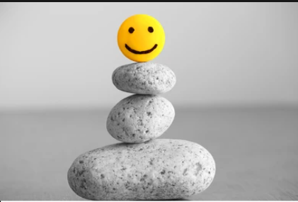
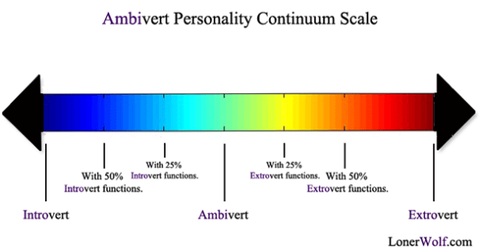
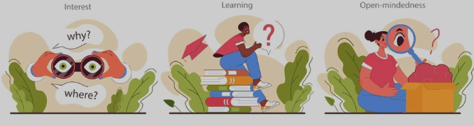

Individuals who exhibit high levels of emotional resilience are characterized as being emotionally adept, even-tempered. They tend to navigate through life experiencing fewer negative emotions and demonstrating a superior ability to cope with stress and adversity. Furthermore, they are more inclined to express positive emotions, such as enthusiasm. On the flip side, individuals with lower levels of emotional resilience may be more susceptible to negative emotions, such as anxiety, depression, and anger. They may find themselves reacting more strongly to stress and facing challenges with greater difficulty. Additionally, they may engage in various maladaptive behaviors, including substance abuse or self-harm. Studies indicate that emotional resilience is linked to various outcomes, encompassing mental health, physical well-being, and interpersonal relationships. Moreover, people with heightened emotional resilience, may enjoy better physical health, evidenced by reduced rates of cardiovascular disease. Average emotional resilience scorers tend to be subjective with experiences and express emotions accordingly.
{{deci_per}}
Individuals who excel in decisive or decision-making skills are characterized as being reliable, hardworking, and efficient. They tend to be well-organized and responsible, with a strong motivation to achieve their goals. Additionally, they may exhibit a profound sense of self-discipline and perseverance in their pursuits. On the other hand, individuals who struggle with decisive or decision-making skills may be more impulsive and disorganized. They might encounter challenges in setting and achieving goals, and they could be prone to engaging in behaviors that are not conducive to their best interests. Research has demonstrated that decisiveness or decision-making ability is linked to a range of outcomes, including academic and job performance, and longevity. High aptitude for decisive decision-making tend to exhibit better academic and job performance. It is important to note that excessively high levels of decisiveness or decision-making skills can also have negative consequences, such as being overly perfectionistic or rigid. Medium scores for decision-making suggest a balanced and adaptive approach to the process of making choices. Individuals with moderate decision-making scores may demonstrate a blend of thoughtful consideration and a willingness to take risks when appropriate.
{{social_incli}}
Social Inclination is typically characterized by an individual's tendency to seek out social interaction and stimulation, as well as their level of enthusiasm and assertiveness in social situations. Individuals who score high on this dimension tend to be outgoing, sociable, and talkative. They enjoy being around others and seek out social situations. They are often described as having a high level of energy, enthusiasm, and assertiveness. They may also be more likely to engage in risk-taking behaviors, such as partying, drinking, or other forms of excitement-seeking. In contrast, individuals who score low on social inclination are more introverted and reserved. They may prefer to spend time alone or in small groups, and may feel uncomfortable in large social gatherings. They may also be less assertive and more cautious in their interactions with others. The average scorers can be classified into selectively extroverted people. They possess the ability to navigate between outgoing sociability and a preference for more solitary pursuits based on the context and their personal preferences.
{{social_well_per}}
Individuals who score high on social wellbeing are characterized as being warm, kind, and considerate. They tend to be cooperative and are motivated to maintain harmonious social relationships. Moreover, they may possess a strong sense of empathy and concern for the welfare of others. On the contrary, individuals who score low on social wellbeing tend to be more competitive and skeptical. They may be less motivated to maintain social harmony and may be more inclined to express their opinions forcefully, even if they may conflict with others. Research has shown that social wellbeing is linked to a range of outcomes, including interpersonal relationships, job performance, and mental health. For instance, individuals who score high on social wellbeing tend to have more positive and supportive relationships with others. They may also excel in careers that require teamwork and collaboration. However, it is important to note that excessively high levels of social wellbeing can also have negative consequences, such as being overly compliant or lacking assertiveness. Medium scores for social wellbeing may reflect a balanced and adaptable approach to interpersonal relationships. Individuals with moderate levels of social wellbeing may possess a combination of warmth, kindness, and cooperation, while also maintaining a healthy degree of assertiveness and independence. Those with medium scores on social wellbeing might engage in cooperative behaviors when needed, contributing to harmonious relationships, yet they may also express their opinions and needs with a reasonable level of assertiveness. In short this possesses well-rounded and adaptable social orientation.
{{curiosity_per}}
Individuals with a high curiosity quotient are characterized as being imaginative, curious, and open to new ideas and experiences. They tend to be intellectually curious and enjoy exploring new concepts and ideas. Moreover, they may exhibit a preference for creativity and aesthetics. On the other hand, individuals with a low curiosity quotient tend to be more traditional and conservative. They may have a preference for familiar and predictable experiences and may be less likely to seek out novel experiences. Research has shown that curiosity quotient is linked to a range of outcomes, including creativity, innovation, and cultural competence. These people may face challenges as they may be overly impulsive or having difficulty with routine tasks. Individuals with a low curiosity quotient may exhibit a preference for familiarity and routine, often leaning towards more traditional and conservative perspectives. Their comfort zone may center around predictable experiences, and they might be less inclined to seek out or embrace novel ideas and unfamiliar situations. While this can provide a sense of stability, it may also limit their exposure to new possibilities, hindering potential personal growth and inhibiting adaptability to change. individuals with medium curiosity quotient scores strike a balance between openness to new experiences and a preference for familiarity. They may tend to seek knowledge on arenas they are interested in. They might be open to exploring new ideas and experiences within certain limits, fostering adaptability without being overwhelmed by constant novelty.
